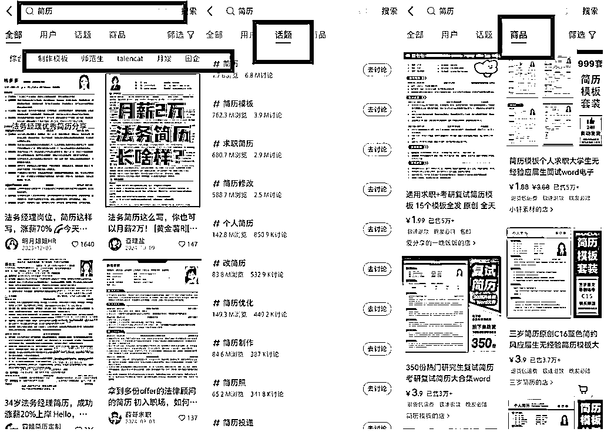

来源：https://zcnzawlx2ndr.feishu.cn/docx/V8W2dmIiDoDXJkxONbYc26BLnjX
小红书虚拟产品的生意，本质上是一门内容电商生意，内容电商生意只有3个最核心的模块：选品，测品，做内容。而选品前，我们要先选赛道。你很难赚到你认知以外的钱，所以这个手册主要是帮大家开眼看世界，你也许会发现，哇！原来这个赛道也能赚钱
新手如果实在不知道做什么，可以从以下推荐赛道入手。这些赛道属于常青赛道，因为：1）需求摆在那里 2）已经有很多成功案例证明客户会在小红书上去付费找产品来满足需求 3）如果你把客户服务好了，很容易产生复购
因为这个赛道容量足够大，可以做的产品很多很多，首先可以拆分出7个细分赛道，每个细分赛道中又可以再继续拆分，对于新手来说，去成为一个细分赛道的专家，会更容易成功
接下来，我会根据学习需求+身份角色（学生本人，家长，教师）这个公式再把教育大赛道进一步拆分出7个高需求赛道
目的是向大家展示这个大赛道中有非常多可以做的品，以及学习拆分赛道的方法。
如果大家有自己想做的赛道，也建议认真看完这个部分，因为底层逻辑都是通的，我对这些赛道的分析方法，同样适用于其它赛道。
| 目标人群 | 主要需求 | 产品类型 | 需求关键词 | 延申关键词 | 高需求时段 |
|---|---|---|---|---|---|
| 0-5岁孩子家长 | 在家里做早教启蒙 | 资料包括数学启蒙、语文启蒙、艺术启蒙、体育启蒙、科学启蒙等相关资料。 | 启蒙教育\幼小衔接\家庭教育 | 习惯培养、积分奖励、成长记录工具、亲子游戏手册、家庭教育、英语启蒙、纪录片学习、亲子互动游戏、教育方法、心理发展指南等内容 | 一级黄金时期：开学季（3 月、9 月）开学季是家长为孩子准备新学期学习资料的关键时期，幼小启蒙资料的需求量会显著增加，重点推广幼小衔接课程、拼音学习资料、数学启蒙资料等热门内容，满足家长的集中需求。 |
| 二级黄金时期：学期中期（4 月至 5 月、10 月至 11 月），家长可能会根据孩子的学习情况补充学习资料。推出亲子互动游戏、手工制作、绘本阅读等特色资料，吸引家长关注。 | |||||
| 三级黄金时期：学期末（6 月、12 月）学期末，家长可能会为孩子购买复习资料或为下一学期做准备。发布育儿经验分享、教育理念等内容，吸引潜在客户，同时推出一些基础学习资料作为引流产品。 |
| 目标人群 | 主要需求 | 产品类型 | 需求关键词 | 延申关键词 | 高需求时段 |
|---|---|---|---|---|---|
| 小学，初中，高中阶段学生及其家长 | 能力培养 | 学习资料包括小初高阶段语文、数学、英语、文理科等科目的学习资料（知识点总结、基础练习、解题技巧、专项练习、单词记忆方法、语法精讲、公式总结、实验操作指导等），及备考资料（中考真题解析、模拟试卷、备考计划、小/中/高考冲刺资料包等），帮助学生提高提高成绩、预习新课程或备考小/中/高考。 | 不同年级+不同学科 | 假期作业、预习资料、校内重点课程、同步练习、单元测试、一课一练、早读晚默、期中、期末复习资料等 | 一级黄金时期： |
| 二级黄金时期：寒暑假期间（1-2 月、7-8 月），家长购买学习资料以帮助孩子巩固知识和预习新学期课程，市场需求较大。 | |||||
| 三级黄金时期：开学初期（3 月、9 月），家长为新学期做准备，会集中购买相关学习资料。 |
| 目标人群 | 主要需求 | 产品类型 | 需求关键词 | 延申关键词 | 高需求时段 |
|---|---|---|---|---|---|
| 大学生 | 大学生的学习，比赛，就业，社交娱乐 | 学科学习资料 | 不同专业关键词： | 专业教材、课程笔记、实验教程、考试重点、复习资料、模拟试卷等，PPT模板，论文写作辅导 | 一级黄金时期： |
| 各类证书备考资料 | 如四六级、计算机二级、教师资格证考试等 | 知识点总结、历年真题及解析、模拟试卷、答题技巧，个性化备考计划、学习时间管理工具、在线模拟考试系统、题库练习等 | 二级黄金时期 | ||
| 大学生比赛 | 挑战者杯(热门)；三创赛(热门)；互联网+创新创业大赛(热门)；职业生涯规划大赛(热门） | 模板，PPT模板，参赛辅导等，参赛经验笔记等 | 三级黄金时期：开学前准备期（8月至9月） 字生在开学前会集中购买新字期的字习资料， 为新课程做准备 | ||
| 大学生求职 | 不同专业求职的简历、攻略、信息差 例如：银行，产品经理 | 求职简历模板、笔面试资料、职业规划、春招时间表、行业分析及岗位推荐指南、模拟笔面试与题库、在线职业规划课程、一对一简历修改服务等 | 因为大学生赛道可以做的类目比较多，建议大家在这些细分中再做挑选，然后深入研究具体黄金时间端。比如求职高峰期，热门比赛时间等 | ||
| 大学生社交娱乐 | 画画，简笔画，跳舞，设计，AI绘画，穷游，P图，手机调色 | 教程，资料，app，攻略 |
| 目标人群 | 主要需求 | 产品类型 | 需求关键词 | 延申关键词 | 高需求时段 |
|---|---|---|---|---|---|
| 校大学生/应届本科生/往届毕业生 | 入学考试的公共课以及专业课复习资料 | 学习资料包括各学科教材精讲、重点知识点总结、历年真题及解析，英语词汇手册、语法精讲、写作模板，数学公式总结、解题技巧，学习计划表、备考攻略、时间管理工具，在线模拟考试系统、题库等。提供考研专项培训课程、考前冲刺班、复试指导 | 考研初试/考公 | 政治、英语、数学等公共课的真题解析、模拟试卷、考前押题等冲刺资料。基础复习资料、备考规划、学习计划 | 一级黄金时期：考研初试前的 3-6 个月（7 月至 12 月）这是考研备考的关键时期，考生对复习资料的需求最为旺盛，尤其是政治、英语、数学等公共课的真题解析、模拟试卷、考前押题等冲刺资料。 |
| 考研复试/考公 | 专业课和面试准备，导师选择、复试资料、简历、面试技巧、专业课冲刺资料 | 二级黄金时期： | |||
| 三级黄金时期： |
| 目标人群 | 主要需求 | 产品类型 | 高需求时段 |
|---|---|---|---|
| 准备参加各考试的学生及社会人员群体 | 入学考试的公共课复习资料、专业课复习资料。 | 学习资料包括公共课（语文、数学、英语、政治、信息技术等，因省份而异）的教材精讲、知识点总结、历年真题及解析、模拟试卷、答题技巧，个性化备考计划、学习时间管理工具、 在线模拟考试系统、题库练习等。提供考前冲刺班、答疑服务，专项培训课程， 考试报名指导、院校选择分析等。 | 一级黄金时期：备考冲刺阶段（考前两个月左右），这是统招专升本备考的关键时期，考生进入备考冲刺阶段，对复习资料的需求最为旺盛，尤其是真题解析、模拟试卷、考前押题等冲刺资料。 |
| 二级黄金时期：考试报名前，考生开始备考并准备报名，对基础复习资料、备考规划、学习计划等需求较高。 | |||
| 三级黄金时期：成绩公布后，未通过考试的考生可能会开始准备下一次考试，对复习资料的需求增加。 |
| 考试类别 | 目标人群 | 主要需求 | 产品类型 | 高需求时段 |
|---|---|---|---|---|
| 考证类 | 对相关证书有需求的考生 法考/CPA等 | 备考资料、面试指导等 | 学习资料包括备考规划、历年真题、模拟试卷、 考前冲刺资料、面试技巧等。提供在线课程、一对一辅导等。 笔试类： | 笔试： |
| 面试： | ||||
| 招聘类 | 应届毕业生/应届毕业生/在职人士 | 求职简历模板、笔面试资料、职业规划、春招时间表、行业分析及岗位推荐指南、模拟笔面试与题库等。 | 学习资料包括简历模板、求职规划指南、笔面试资料、企业真题解析等。 | 春招： |
| 二级黄金时期：2 月至 3 月：春招正式启动，求职者集中准备简历和面试，对相关资料需求最为旺盛。 | ||||
| 三级黄金时期： 1 月至 2 月：春招预热期，部分企业提前发布岗位，求职者开始准备简历和求职资料。 | ||||
| 目标人群 | 主要需求 | 产品类型 |
|---|---|---|
| 学校老师、班主任、管理老师、园长校长等 | 教学教研需求 | 跟随教学内容开展的教学教研课件：比如晨读课件、晨读辅助软件，早读晚默、单元检测内容等。 |
| 为了更好的教学开展的互动内容（幼儿+小低）：如课前/课堂小游戏；抽背小游戏；各类教学评语总结，如期末评语、作文评语等 | ||
| 教务管理需求： | 除了教学以外，还有很多教务内容。 |
第一部分是从用户身份和需求出发，给了大家一些赛道推荐，接下来我们从常见的虚拟产品的品类出发。有一些常见的产品形态在小红书上非常火热，大家可以从产品反推细分的需求点。
方法1：用产品关键词搜索相关笔记，根据热门笔记选细分赛道
例子：
第一步：小红书搜索栏去搜索关键词“表格”，会看到有一些细分需求，比如：班主任，HR，word文档
第二步：找到热门笔记，根据点赞高的笔记选择赛道
方法2：用产品关键词搜索相关笔记，根据热门话题选细分赛道
例子：
第一步：小红书搜索栏去搜索关键词“表格”，切换到话题下方会看到很多细分
第二步：每个热门话题都可以做为一个细分赛道
第三步：点入热门话题定位具体产品
方法3：用产品关键词进行商品搜索，根据热卖产品选细分赛道
例子：
第一步：小红书搜索栏去搜索关键词“表格”，切换到商品
第二步：把销量从高到低排序，根据热卖产品来选赛道
表格，PPT，模板，简历，合同，笔记，教材，动画，电子资料，电子书，游戏，App，软件，课程，资料，服务，教程，手册，真题，攻略
| 365天计划于复盘Excle模版 |
|---|
| 记账excle模版/excle多项目进度管理表 |
| 装修全套电子资料 |
| 班主任班级管理表 |
| 月度工作计划表 |
| 备婚清单表 |
| 文言文实词、虚词打卡表 |
| 高校硕博待遇信息差表格 |
| 艾宾浩斯遗忘曲线 |
| 记忆表 |
家长会ppt主题班会ppt/述职报告ppt模版/毕业论文ppt模版/大学生创业项目ppt模版/不同年级课件ppt/开学第一课ppt/定制ppt
还有很多细分赛道ppt模版：如中医学位贴敷操作ppt模版/黄山城市文化介绍ppt/票根ppt模版
求职简历/应届生简历/研究生复试简历/夏令营简历/管培生简历/师范生简历/月嫂简历/国企简历/法务简历

离婚合同/股权合作协议/教育劳动合同/劳务合同/房屋租赁合同/影视剧制作合同/外贸合同/施工合同/劳务接触合同
各类学习项目的总结笔记、三色笔记都有需求
一般来说幼师公开课、各种主题版本课、幼儿启蒙纪录片、动画片等都在小红书有不小的需求。
【注意甄别版权问题，有版权的不建议碰】
绝版书的噱头结合女性成长、赚钱秘籍、认知提升、情感、天涯神贴等，非常容易在小红书获取流量
目标客户：宠物主人/宠物行业从业者/宠物爱好者
赛道主要提供专业的宠物训练资料，可增值一对一视频指导。解决宠物的常见行为问题，减少因行为问题导致的困扰。提供定制化的训练方案，帮助宠物主人根据自己的需求和宠物的特点进行训练。提升宠物的生活品质和主人的养宠体验。
目标客户：专业摄影师/摄影爱好者
赛道主要提供相机滤镜资料以及不同场景下的滤镜选择和应用技巧，帮助客户提升拍摄效果，满足不同场景下的拍摄需求。
目标客户：职场人士/创业者和企业管理者/个人成长与自我提升爱好者/营销和销售人员/心理咨询师和培训师
赛道主要提供系统的人性思维相关资料，帮助客户更好地理解人性，提升思维，解决实际问题，提升个人和职业发展的竞争力。
目标客户：装修小白/自装业主/中高端住宅业主/二次装修或翻新业主/商业空间装修业主
赛道主要提供从装修前期准备到施工验收的全流程避坑资料、实用工具和表格等。可增值一对一咨询服务，提供个性化的避坑方案。通过提供全面的装修避坑资料和服务，帮助客户在装修过程中少走弯路，提升装修体验和满意度。